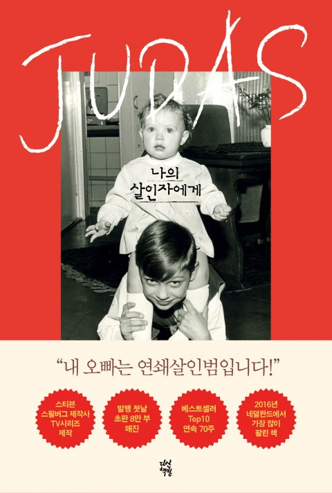

49
아빠의 폭력은 우리 가족의 구석구석까지 스며들어 우리를 완전히 적셨다. 아빠에게 화를 낸다는 건 선택지에 없었기 때문에 절망적인 상황을 서로의 탓으로 돌리고 서로 싸워댔다. 우리는 신경이 날카로운 아이들이었고, 집에서 겪는 계속된 위협 탓에 관용이나 상호 이해 같은 걸 베풀 여지가 남아 있지 않았다. 공격성과 폭력성이 의사소통 전략이 되었다.
그럴 수밖에 없었다.
우리는 다른 방법을 몰랐다.
그래서 폭력은 세대에서 세대로 이어졌다.